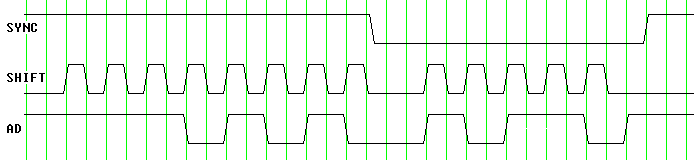
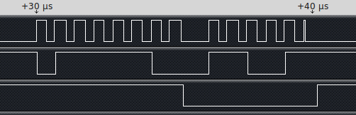
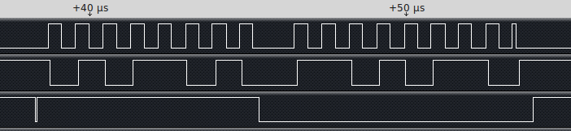
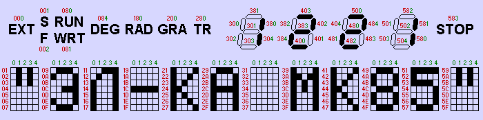

| Index | wersja polska |
Earlier versions of the MK-85 were built with following chips:
In the later, more widespread version, the microprocessor and the I/O controller are integrated on a single chip, and two 8kB ROM chips have been replaced with a single 16kB one. List of chips used:
All information presented herein apply to this newer version.
Please refer to the Links page for the circuit diagram.
| Address | Access size | Function |
|---|---|---|
| $80-$FF | byte | LCD controller serial communication port |
| $100 | word | Data register of the fixed input parallel port KB, bits 8-2 used as keyboard matrix columns inputs |
| $102 | word | Data register of the bi-directional parallel port PP, bits 3-1 used as keyboard matrix rows outputs |
| $104 | word | Control and status register |
The LCD controller found in the earlier version of the Elektronika MK-85 doesn't have its own memory, but uses the system RAM instead. The I/O controller is involved into the display refresh procedure. Every 0.4 ms it suspends the program execution by the microprocessor and performs a DMA cycle to transfer a specific part of the RAM to the LCD controller.
Newer version of the LCD controller has its own display RAM on chip and is only accessed when the information on the display needs to be updated. The DMA isn't used any more.
The communication with the LCD controller takes place through a serial bus. Data transfer is initiated by writing to the address range $0080-$00FF. Only the less significant 5 data bits are relevant.
| Pin | Name | Function |
|---|---|---|
| 2 | SYNC | High level when transferring address, low level when transferring data. |
| 62 | SHIFT | This signal clocks the data shift register. |
| 1 | AD | Serial data, the least significant bit first, high level is assumed as logical 0 while low level as logical 1. |
On the diagram below an example value of $12 is written to the address $00A8.

A logical analyzer shows an additional short SHIFT pulse of ca. 0.1 µs width.

Later releases of the Т36ВМ1-2 microprocessor transmit 8 data bits instead of 5. The change occurred somewhere between the manufacturing date codes 9105 to 9109.

Tests showed that the LCD controller chip pays attention only to the first 5 received data bits. Any subsequent ones are discarded.
| Address | Function |
|---|---|
| $80-$DF | This address range maps the internal RAM of the LCD controller. |
| $E0 | This register controls the hardware generated cursor. bits 3-0 define the cursor position (value $0C when no cursor should be shown) bit 4 defines the cursor shape, filled rectangle when bit cleared, underscore when set |
| $E8 | Some control register of unknown function, initialised to 0 |

The drawing shows pixel assignments to the display RAM locations.
Red coloured values represent address offsets from start of the display RAM.
Green coloured values represent bit numbers within a byte.
The keyboard interface consists of two 16-bit ports:
The keyboard is scanned by sequential writing of logical ones to the bits of the row select port, then reading the column port. A pressed key connects a row with two columns using a pair of contacts.
The keyboard interface can wake the processor from idle mode when any bit of the column port changes state from 0 to 1.
Low level appearing simultaneously either on the KB9 and KB10 inputs (pins 10 and 11) or on the KB0 and KB10 (pins 1 and 11) triggers the HALT interrupt.
In the Elektronika MK-85 the KB9/KB10 inputs handle the STOP key selected by the PP1 output.
Pressing this key causes a HALT interrupt request to the vector at address $0078.
If the Interrupt Priority bit I (bit 7) in the PSW register is cleared, then low level appearing on the PP1 port (pin 15) configured either as input or output triggers an EVNT interrupt request to the vector at address $0040 (not used in the Elektronika MK-85).
Low level appearing simultaneously on the KB0 and KB1 inputs (pins 1 and 2) makes the CPU enter the power-off mode.
The power-off mode is sustained while either the KB9 and KB10 inputs (pins 10 and 11) or the KB0 and KB10 (pins 1 and 11) are kept at low level.
Any change to a high level causes a CPU Reset.
Subsequent change to low level on the KB0/KB10 or KB9/KB10 inputs triggers the HALT interrupt.
Therefore, the system can be turned off by a contact pair connecting the KB0/KB1 inputs to a low level, or turned on by a contact pair connecting either the KB0/KB10 or the KB9/KB10 inputs to a low level.
The choice of inputs depends on the ROM size (8kB or 32kB).
| Bit (decimal) | Function |
|---|---|
| 0 | This bit controls the direction of the bi-directional port's group of pins PP3-PP1 (inputs when set). In the Elektronika MK-85 they drive the keyboard matrix rows, and therefore are configured as outputs. |
| 1 | This bit controls the direction of the bi-directional port's group of pins PP7-PP4 (inputs when set). |
| 2 | This bit controls the direction of the bi-directional port's group of pins PP11-PP8 (inputs when set). |
| 3 | This bit controls the direction of the bi-directional port's group of pins PP15-PP12 (inputs when set). In the Elektronika MK-85 they switch the RC timing constant of the clock oscillator circuit. Setting this bit selects fast CPU clock. |
| 4 | This bit is set when a low level signal lasting more than 20ns was captured on the PP1 pin (either in the input or in the output mode). It can be cleared only by writing to the register. |
| 5-9 | These bits select the external memory configuration (ROM and RAM size). |
| 10 | This bit stops the CPU clock when cleared. |
| 11 | This bit divides the CPU clock frequency by 8 when cleared. The MK-85 firmware uses this mode to handle the keyboard and to generate delays. |
| 12 | Setting this bit powers down the CPU. |
When entering the HALT mode, the processor saves the previous PC and the PSW in special internal registers CPC and CPS (accessible in the HALT mode with instructions RCPC/RCPS and WCPC/WCPS), then the control passes to the HALT service routine through a vector in the ROM. The least significant byte of the vector address has fixed value of $78, while the most significant byte is determined by the SEL register.
| Instruction | Opcode | Operation | Description |
|---|---|---|---|
| GO | $000A | PC <- CPC PSW <- CPS |
return to the USER mode |
| STEP | $000E | PC <- CPC PSW <- CPS |
function equivalent to GO, except that it disables the HALT mode interrupt for a single instruction cycle, used to single-step the program |
| RSEL | $0010 | R0 <- SEL | read the SEL register, returns $0000 in the MK-85 |
| MFUS | $0011 | R0 <- (R5)+ | read from the USER address space |
| RCPC | $0012 | R0 <- CPC | read the CPC register |
| RCPS | $0014 | R0 <- CPS | read the CPS register |
| MTUS | $0019 | -(R5) <- R0 | write to the USER address space |
| WCPC | $001A | CPC <- R0 | write the CPC register |
| WCPS | $001C | CPS <- R0 | write the CPS register |
Thanks to Vladimir Poletaev for his great help!
{kind=link}
{kind=link}
{kind=link}
{kind=link}
{kind=link}